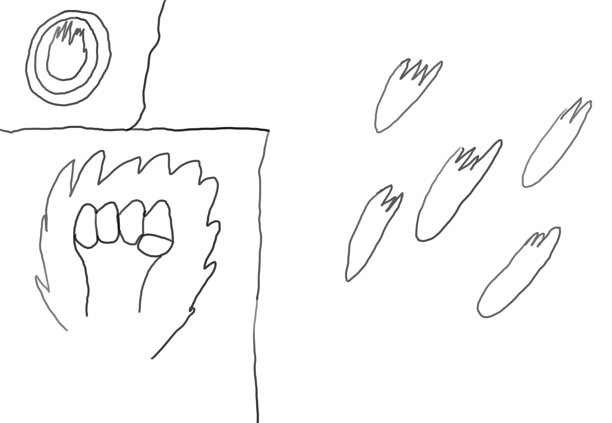

Sean Francis
"I've Written Your Story"
Document
Name: Leah Kaitlyn
Age: 22
Gender: Female
Description: The first thing people notice is that Leah has long curly red hair that reaches just below her shoulder blades. Her dark blue eyes always give the impression that she is happy and her thin lips are naturally curved upward. There is not a sharp line outlining her face and her dimples are always visible. She is otherwise attractive with the build of a runner. Lean muscle is slightly visible under her skin. She tends to wear a flannel shirt under a hoodie and tight black jeans no matter the weather.
Personality: Leah is not afraid to speak her mind. Some people even wonder if she is able to keep her mouth shut for more than a few minutes at a time. While she is brutally honest, she believes that it will help people improve themselves. However, it usually comes out as if she was rude. Yet it does not seem to faze her. Her attitude is usually cheerful, but when she enters battle she becomes a ball of fiery fury with a loud mouth. Surprising to everyone, her favorite music is classical with Vivaldi being her favorite composer.
Background: Leah was born in Trim, Ireland. All of her young life was inside of the Saint Patricks's Cathedral church and she has never known her family. She became a familiar face in the church and helped in its maintenance.
She learned that she was a mage at the age of twelve when the tower of the church was set on fire. Men and women were trapped inside and the doorway was blocked by debris. None of the others would have been able to move it in order to free the only door out. Without exactly realizing what she was doing, she used wind and fire to ease and burn the debris. Once done, she then helped lead the victims out.
Yet, that act did not come without a price. When the dust settled and the tower was extinguished the members of the church started targeting Leah. According to them, she was a danger to them all. She could lose control of her power and some blamed her for the fire in the first place. Everyone around her was at risk. One man tried to defend her: Father Ryan. He pleaded with the crowd trying to get them to see past their fear. Saying that she could be trained to control her gift.
No one listened.
The next day, she was sent to a orphanage built for those with magic on the outskirts of Galway. It was the only one in Ireland and was already holding over two hundred children. She was practically tossed in with the rest of the children and joined the routine of meals, training and lectures about the dangers of magic and that the children should forget about it once they learn to control it. Instead of following 90% of the other children, she did not work to forget it. In fact, she started getting books on the occasional supervised trips into Galway and self teaching the topics that the lecturers left out.
Years later, trouble came to Galway. What would later be called the Galway Orphanage Scare, members of a local Black Cult attacked the orphanage. They were trying to forcefully take the children probably to recruit them. As they were working hard to prevent the children from using magic, none of the orphanage staff or the children could defend themselves. At least, except Leah. She used her power to fend herself and the orphanage against the Cult. With the near destruction of the orphanage, she succeeded.
The Irish Inquisition heard about the event and came to the orphanage under repairs. They talked with her and then recruited her. Under the guidance of the Inquisition teachers, she became a great Seeker Mage.
Various Lines: "Did anyone ever tell you that you can be an ass sometimes?" "Come get me you black-hearted son of a bitch!" "You are so fun to annoy!"
Design Notes: As a mage, Leah excels at mid-range combat. Yet, she is not afraid to get in close and get her hands dirty when needed. Therefore, players will have a better chance of success when they focus on the Magic stat to increase her damage and Cell Energy (CE) capacity. After that, players can either go with Strength to increase her close combat capability or Charisma to increase her persuasive and intimidation ability. Wisdom is useful but not something that players should focus on. Constitution and Dexterity are two stats players should not worry about at all as they do not provide much use.
Leah's starting class is the "Mage" class. This class provides passive effects that help increase her overall ability with magic (such as increasing her CE or boosting the Area of Effect radius of spells) and skills such as "Fireball" (Leah throws a small sized ball of fire that explodes on impact) and "Buffet" (Leah sends a gust of wind that slows movement and can even daze foes for a couple of seconds). When players reach a certain level, they can choose one of three "specialized classes."
Her "Influencer" class focuses in on her Charismatic ability in and out of battle. With this class, Leah becomes more of a support character as she gains passive effects that increase her Intimidation and Encouragement. Skills that she can learn include "Demoralization" (Leah chooses a target to start insulting. This reduces the target's defense while she "channels" the skill) and "Courage" (All allies within a radius of Leah will gain an increase in attack).

The "Fury" class takes her close-combat capability and turns it up to eleven. This class mixes magic with the brutality of blades and fists. She can passive abilities that modify her current spells to become spells that either work only in close combat or both close and mid combat. Skills from this class include "Enhancement" (Leah can add an element to her weapon/hands that increase her damage and may work better with certain opposing spells) and "Meteor Rain" (Leah can use this in close combat and mid ranged combat. It launches balls of fire from her hands to damage enemies in an area around her.)
Her "Seeker" class focuses on sensing magi and artificers in her surroundings and shutting down their abilities. It makes up for lack of many combat abilities with the ability to find magic and disable it so her allies or she can then take down the target. She can learn passive effects that increase her magical perceptions and how much magic she can remove from her target. Her skills that can be learned include "Seal" (Leah temporarily removes the target's ability to use spells or artifices) and "Seek" (Leah concentrates on finding magic in use which includes traps and subtle spells. She cannot move while she does this.)